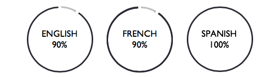
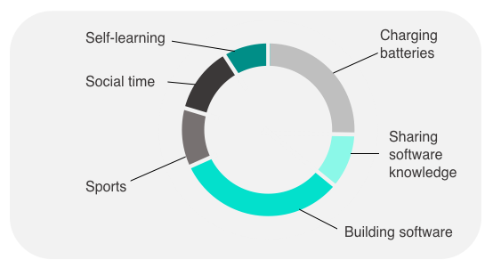
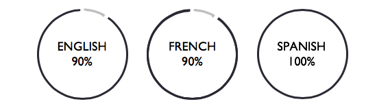
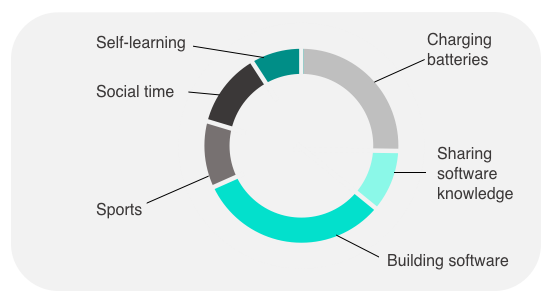

ALEJANDRO PITARCH OLIVAS

CONTACT AND BIO
LinkedIn GitHub I’m a software developer and former aerospace and mechanical engineer. I developed a deep love for data as a technical manager at Michelin which has become an endless curiosity about coding. I get excited about cutting edge-technology solving challenges including AI and ML. I aim to grow and contribute to a dynamic team in a culture that values challenge and learning. EXPERIENCE
Michelin UK (Jan 2017 - Jan 2018) Technical Manager of the Process ✓ Successfully deployed an international and collaborative team project based on the implementation of new technologies in order to set the benchmark for Michelin worldwide. ✓ Evaluated, organized and prioritized workload within a schedule for an effective ramp-up of the project in a diligent manner. ✓ Maintained a close liaise with third party contractors to ensure all equipment is fit for purpose with high involvement in decision making. ✓ Software: Excel and PowerPoint. Michelin France (Oct 2015 - Jan 2017) Project Engineer Michelin UK (Nov 2014 - Oct 2015) Mechanical Engineer Ford Spain (Oct 2014 - Nov 2014) Intern Design Engineer Michelin UK (Jun 2014 - Sep 2014) Intern Design Engineer EDUCATION
Makers Academy 2018 Software Development and Computer Software Engineering The University of Dundee 2017 – 2018 Masters in Management (MSc) Business Administration and Operations Universitat Politecnica de Valencia 2009 – 2014 Bachelor’s Degree in Mechanical Engineering with Aerospace Modules High School Maths & Chemistry Olympics
LinkedIn GitHub I’m a software developer and former aerospace and mechanical engineer. I developed a deep love for data as a technical manager at Michelin which has become an endless curiosity about coding. I get excited about cutting edge-technology solving challenges including AI and ML. I aim to grow and contribute to a dynamic team in a culture that values challenge and learning. EXPERIENCE
Michelin UK (Jan 2017 - Jan 2018) Technical Manager of the Process ✓ Successfully deployed an international and collaborative team project based on the implementation of new technologies in order to set the benchmark for Michelin worldwide. ✓ Evaluated, organized and prioritized workload within a schedule for an effective ramp-up of the project in a diligent manner. ✓ Maintained a close liaise with third party contractors to ensure all equipment is fit for purpose with high involvement in decision making. ✓ Software: Excel and PowerPoint. Michelin France (Oct 2015 - Jan 2017) Project Engineer Michelin UK (Nov 2014 - Oct 2015) Mechanical Engineer Ford Spain (Oct 2014 - Nov 2014) Intern Design Engineer Michelin UK (Jun 2014 - Sep 2014) Intern Design Engineer EDUCATION
Makers Academy 2018 Software Development and Computer Software Engineering The University of Dundee 2017 – 2018 Masters in Management (MSc) Business Administration and Operations Universitat Politecnica de Valencia 2009 – 2014 Bachelor’s Degree in Mechanical Engineering with Aerospace Modules High School Maths & Chemistry Olympics
PERSONAL PROJECTS
✓ Self-driving car using Machine Learning and Python. 2018 ✓ Low fuel consuming aircraft for Airbus Competition. 2014 ✓ Biomechanical robot to assist disables while walking. 2014 ✓ High efficiency car for Shell Eco Marathon. 2012 SKILLS
Amongst others: Full-Stack Development - Agile Methodologies - TDD XP Values - BDD - OOP - Ruby - Rails - Sinatra JavaScript jQuery - AJAX - SQL - MongoDB RSpec - Capybara - Jasmine - HTML - CSS - APIs - C++ Python - Machine Learning LANGUAGES
 English certificate by the University of Cambridge, French certificate by Queens University of Belfast, native Spanish and minor certificates in three other languages. A DAY OF MY LIFE

✓ Self-driving car using Machine Learning and Python. 2018 ✓ Low fuel consuming aircraft for Airbus Competition. 2014 ✓ Biomechanical robot to assist disables while walking. 2014 ✓ High efficiency car for Shell Eco Marathon. 2012 SKILLS
Amongst others: Full-Stack Development - Agile Methodologies - TDD XP Values - BDD - OOP - Ruby - Rails - Sinatra JavaScript jQuery - AJAX - SQL - MongoDB RSpec - Capybara - Jasmine - HTML - CSS - APIs - C++ Python - Machine Learning LANGUAGES
 English certificate by the University of Cambridge, French certificate by Queens University of Belfast, native Spanish and minor certificates in three other languages. A DAY OF MY LIFE
